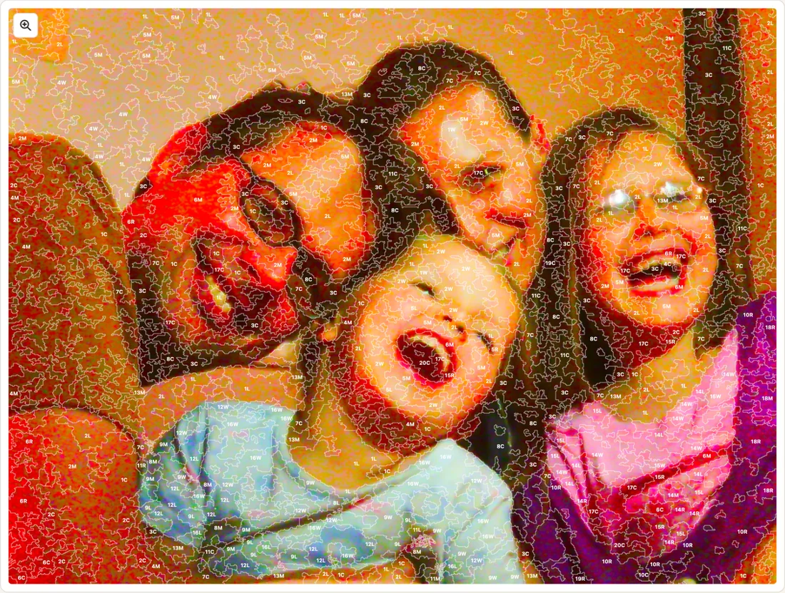
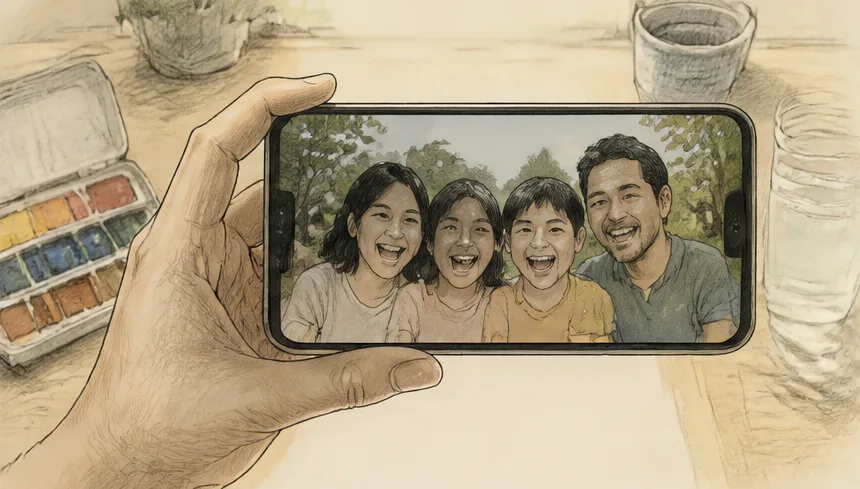

Choose a photo
Press Choose photo and pick a picture, or Take photo on a phone or tablet. In Tintmap the button is New Image. Samples opens the built-in examples if you want to try the app first.
Photos with clear light and shadow and a few large shapes work best. The app starts analysing at once; set Show to Photo at any time to see the original again.

